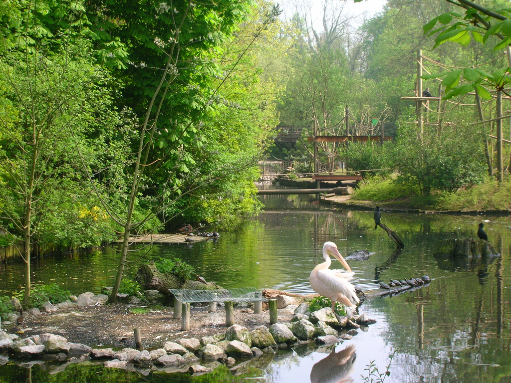

Lille
La Colonne de la Déesse
Place du Général de Gaulle
- Du haut de ses 17 m, elle domine toute la place du Général De Gaulle. Au sommet, la Déesse, le visage sévère, une main tendue vers le sol, de l’autre un boutefeu. La colonne de la Déesse est à l’image de ce qu’elle symbolise : la ville de Lille, son courage et sa résolution lors du siège des Prussiens qui durera du 29 septembre au 6 octobre 1792.


Zoo de Lille
Avenue Mathias Delobel
- Le parc zoologique de Lille, localement appelé le zoo du Bois de Boulogne, est situé au pied des remparts de la fameuse citadelle Vauban. Il est réparti en 7 zones thématiques, dans lesquelles des centaines d’animaux sont préservés. Des différents reptiles rares de la Maison tropicale aux gibbons à mains blanches de la Vallée des Singes, en passant par les alpagas des Terres d’Amérique et les makis de l’Île de Madagascar, de nombreuses espèces insolites y sont présentées de manière originale. Plus récemment, le parc a ouvert une grande volière transversale de 750 m2, pour inviter petits et grands à s’immerger au milieu de nombreux oiseaux et mammifères sud-américains.
1 Formation 1 job
Avenue des Saules
- Découvrez la Nurserie Numérique et intégrez un parcours de découverte des métiers passionnant ! Au travers un cycle d’ateliers vous présentant les métiers de demain, appréhendez les facettes de ces emplois qui offrent de réelles opportunités professionnelles. La Nurserie Numérique vous permettra de découvrir et de toucher du doigt le job de Développeur(se) Informatique (Web et Applications), d’Administrateur(trice) Système et Réseaux ou encore les métiers du Test Informatique, de la Cybersécurité ou de la Data….